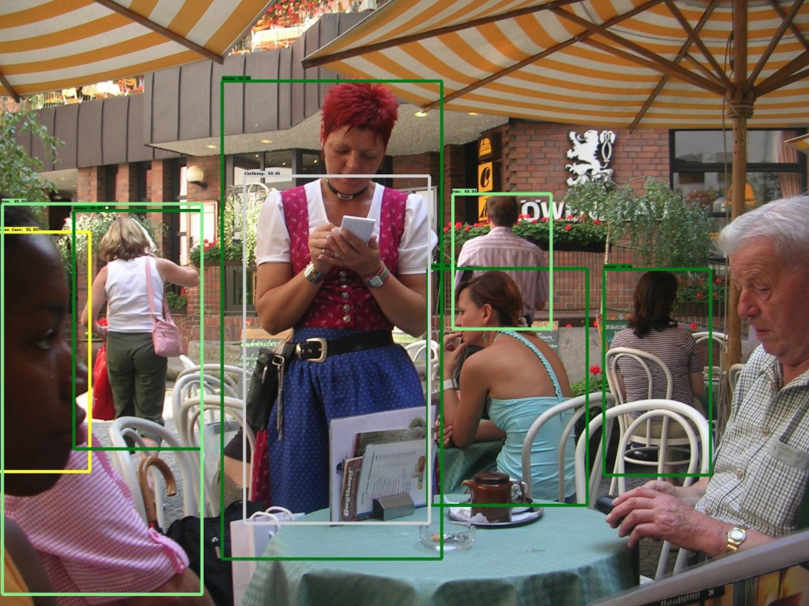
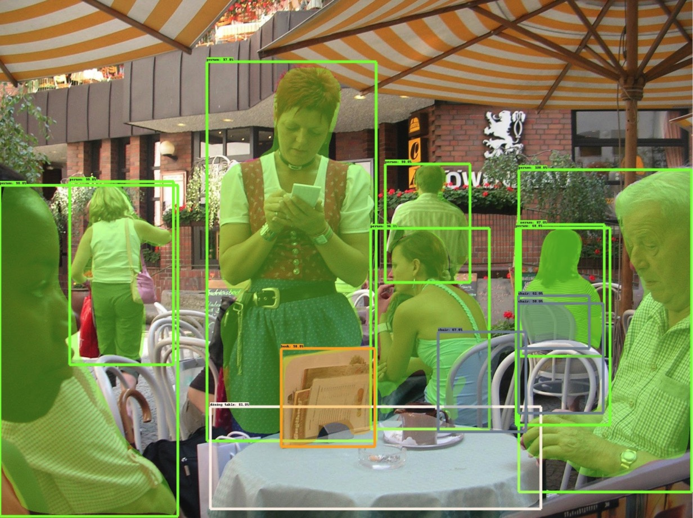
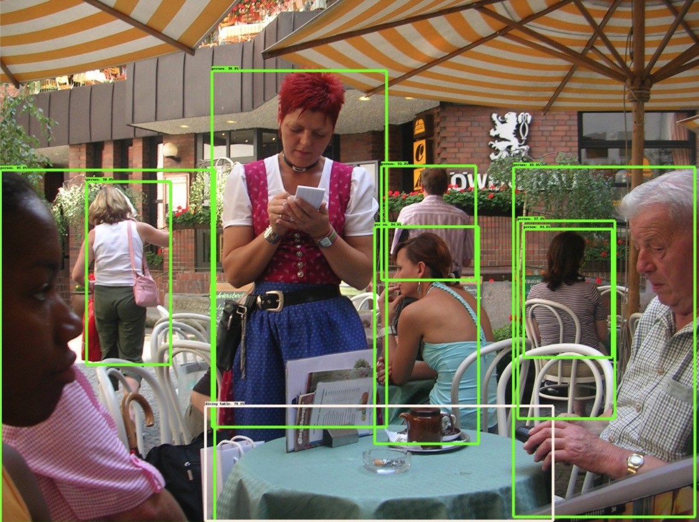
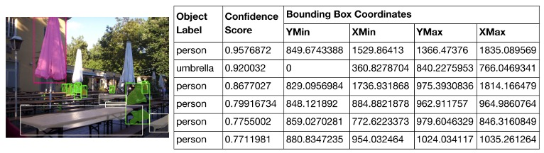
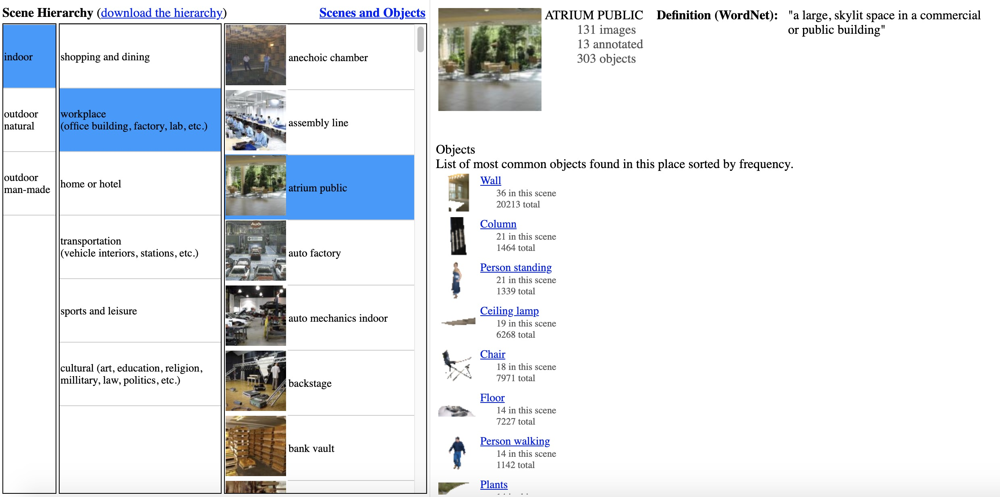

Object-Based Scene Recognition
-
A scene recognition model using associative logic and Naive Bayes classification.
-

-
During my sumer internship at the U.S. Army Research Lab's Computational and Information Sciences Directorate, I worked on a deep learning model that, when given an image, suggests potential locations based on the objects within it. Projects this summer focused on the beginning and end stages of this model.
-
01. Overview/Approach
-
- For an image, implement a library of pre-trained object recognition models to identify a set of objects and their probability of correct detection (“confidence score”).
- Forward high confidence detected objects to a vector reasoning engine to generate a knowledge base of objects associated with the detected object labels.
- Use this knowledge base to confirm objects in the initial list of high-confidence objects.
- For objects in the knowledge base not part of the initial object list, use an additional set of object detection models and add new objects to the object list if objects are found. The higher expectation lowers required confidence score.
- Train a Naïve Bayes classifier on the SUN2012 database’s scene and object annotations to generate a list of possible scenes given a set of objects.
- Input the larger set of detected objects into the classifier to output possible scene categories.

-
02. Object Detection Models
For my internship, one of the components of the model that I focused on was implementing a set of various deep learning object-detection models and formatting the data to be fed into the vector-based reasoning engine. I ran a set of images on three pre-trained TensorFlow models: Faster RCNN Inception Resnet (trained on the OpenImages database), Mask RCNN Inception Resnet (trained on the CoCo database), and SSD MobileNet (trained on the CoCo database).
-
Sample Image
Faster RCNN Inception Resnet (OpenImages)
Mask RCNN Inception Resnet (CoCo)
SSD MobileNet (CoCo)
-
Each model had varying results, but in general, I found the Mask RCNN model to be the most accurate.
-

Object information was outputted as a triplet: object label, confidence score, and object bounding box location.
-
03. Naive Bayes Classifier
-
My next area of focus was using the expanded set of objects provided by the vector reasoning engine to predict an image's scene category. To do this, I used a Naive Bayes machine learning agorithm and used annotations from MIT/Princeton's SUN database to train my model.
Based on the SUN database's hierarchical nature, I trained the model to predict scene categories based on both broad categories (e.g. indoor, outdoor man-made, outdoor natural) and specific categories (anechoic chamber, assembly line, etc.) I found that the model was very accurate for the broader categories, with a testing accuracy at 90.48%, but less accurate for more specific categories (testing acuracy of 53.26%).
